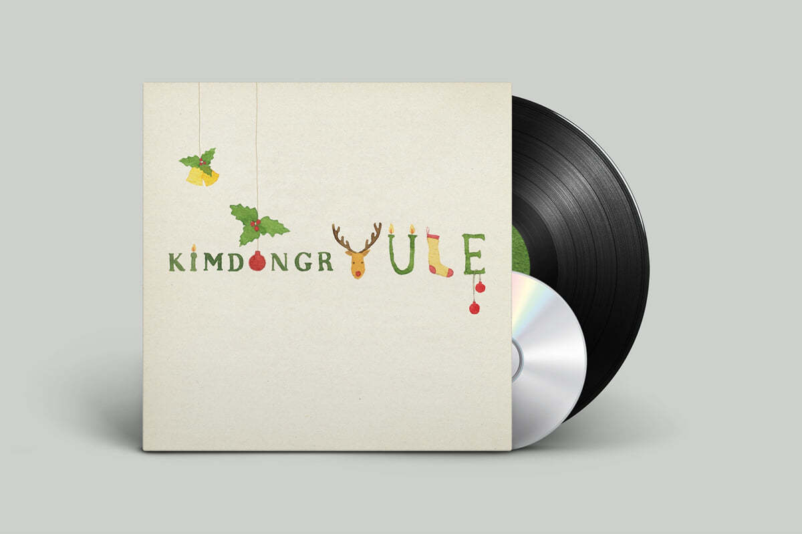

안녕하세요 라보엠입니다.
공기가 점점 더 차가워지고 있습니다. 올해는 다른 해보다 더 빨리 겨울 노래를 찾게 되네요. 오늘은 겨울 노래로 가득찬 김동률의 크리스마스 앨범 kimdongrYULE(2011) 을 소개해드릴까해요. 김동률의 크리스마스 카드라는 표현을 써서 소개할만큼 크리스마스, 겨울 분위기로 쓰여진 노래들로 가득찬 앨범입니다. 타이틀 곡은 Replay 로 이 곡이 가장 인기도 있었지만, 겨울잠, 박새별과 함께 부른 새로운 시작, 여러 가수들과 함께 부른 우리가 세상을 살아가는 법 등 버릴 노래가 없는 앨범입니다.

김동률 kimdongrYULE 수록곡
1. Prayer
2.크리스마스잖아요
3. 크리스마스 선물
4. 겨울잠
5. 새로운 시작 (feat. 박새별)
6. 한 겨울밤의 꿈
7. Replay
8. 우리가 세상을 살아가는 법 (feat. Friends)
김동률 kimdongrYULE 앨범 소개 - 유희열
"나의 손을 잡아요. 크리스마스잖아요!"
4년 만에 도착한 김동률의 크리스마스카드, 'kimdongrYULE'
늘 궁금했다. 김동률의 겨울 노래는 어떨까. 누구보다 감성적이고 클래식한 그가 만드는 크리스마스 캐롤은 어떨지 궁금했다. 결론부터 말하자면 어린 시절 크리스마스 선물로 초콜릿 과자 사탕이 한 가득 들어있던 종합선물세트를 품에 안은 기분이다. 사랑스럽고 행복하고 쓸쓸하고 외롭고 벅차 오른다.
이번 앨범은 2008년 'Monologue" 앨범 이후 4년 만에 발표하는 그의 첫 솔로 앨범이다. 이 앨범의 제목인 YULE 은 크리스마스를 뜻하는 영어의 옛 고어이다. 그의 영문 이름과의 절묘한 매칭이 재미있다. 마치 언젠가는 이런 앨범을 만들었어야 할 운명 같은 느낌이라고나 할까.
크리스마스 때나 연말엔 아무래도 외국의 캐롤이나 팝을 즐겨 듣게 되는 반면, 국내 순수 창작곡들의 겨울앨범이 상대적으로 드문 것에 아쉬움을 느껴 아주 오래 전부터 구상했던 앨범이라고 한다. 수록 곡 중 가장 오래된 곡은 1998년에 만들어졌고 앨범의 많은 곡은 2000년대 초반, 가장 감성이 샘솟던 시절에 만들어졌다고 한다. 따라서 이 앨범엔 전람회부터 유학시절, 그리고 지금의 모습까지 시대를 거슬러 온 김동률의 여러 가지 표정이 담겨 있어서 그의 예전스타일을 그리워하거나 예전부터 그의 음악과 함께 해 온 오랜 팬들에겐 더욱더 반가운 앨범이 되지 않을까 싶다.
특히 타이틀곡인 Replay 는 2000년도 초반에 쓰인, 김동률이 만든 정교한 편곡과 연주, 화려하면서도 복잡한 구성, 무엇보다도 절규하는 그의 목소리가 돋보이는 김동률표 발라드 곡으로, 웅장한 스타일과 격정적인 보컬이 애절한 곡이다. 이별 후 매일 연인과의 기억을 되새기면서 자책하지만 어느새 자기도 모르게 덧입혀지고 지워지면서 변질되어가는 기억의 재구성에 관한 이야기를 담고 있는 곡으로서 황성제의 리듬편곡과 박인영의 스트링 편곡이 돋보인다. 최근 가요계에선 느끼기 힘든 음악적 압도감과 벅찬 감동을 느낄 수 있는 곡이다.
오랜 시간 함께 작업해 온 국내 최고의 세션 연주자들과 엔지니어를 비롯해 이번 앨범 절반의 Co-Producer인 황성제, 가사에 도움을 준 박창학과 스트링 편곡에 박인영, 이지원, 재즈 피아니스트 송영주와 나원주의 피아노, 런던 심포니 오케스트라와 어린이 합창단의 평화로운 하모니. 세계 최고의 스튜디오인 Bernie Grundman 의 Brian Gardener 의 마스터링에 이르는 초호화 멤버의 동료와 아티스트들이 김동률의 겨울무대를 완벽하게 해주었다.
또한 동료들의 도움으로 완성된 '우리가 세상을 살아가는 법' 에서는 유희열, 이상순, 윤상, 정재형, 나윤권, 스윗소로우, 박정현, 정순용, 하동균, 존박, 하림, 이적, 이영현, 김재석, 황성제로 이어지는 그의 여러 친구들의 다양한 목소리를 들을 수 있고 욕심쟁이 이후 7년만의 여성 보컬과의 듀엣 곡인 '새로운 시작'에선 신예 싱어송 라이터인 박새별과의 호흡을 맞추었는데, 겨울햇살처럼 반짝이다가 웅장하게 폭발하는 곡의 구성과 하모니는 마치 동계 올림픽 주제가를 연상케 하는 희망 가득찬 설레임을 느낄 수 있다.
이렇게 김동률의 겨울은 수많은 사람들의 손길과 충분한 시간과 노력으로 무르익어 우리 앞에 펼쳐졌다.
김동률 Replay MV
김동률 Repaly 가사
난 요즘 가끔 딴 세상에 있지
널 떠나보낸 그 날 이후로 멍하니
마냥 널 생각했어 한참 그러다보면
짧았던 우리 기억에 나의 바람들이 더해져
막 뒤엉켜지지
그 속에 나는 항상 어쩔줄 몰랐지
눈앞에 네 모습이 겨워서 불안한
사랑을 말하면 흩어 없어질까
안달했던 내가 있지
그래 넌 나를 사랑했었고
난 너 못지않게 뜨거웠고
와르르 무너질까
늘 애태우다 결국엔 네 손을
놓쳐버린 어리석은 내가 있지
난 아직 너와 함께 살고 있지
내 눈이 닿는 어디든 너의 흔적들
지우려 애써봐도 마구 덧칠해 봐도
더욱 더 선명해져서 어느덧 너의 기억들과 살아가는
또 죽어가는 나
네가 떠난 뒤 매일 되감던 기억의 조각들
결국 완전히 맞춰지지 못할
그 땐 보이지 않던 너의 맘은 더 없이 투명했고
난 보려 하지 않았을뿐 워
넌 나를 사랑했었고
난 너 못지않게 뜨거웠고
와르르 무너질까
늘 애태우다 결국엔 네 손을
놓쳐버린 어리석은 내가 있지
넌 나를 사랑했었고
난 너 못지않게 간절했고
그 순간을 놓친 죄로
또 길을 잃고 세월에 휩쓸려
헤매 다니는 어리석은 내가 있지
널 잃어버린 시간을 거슬러
떠다니는 어리석은 내가 있지
너 머물렀던 그 때로 거슬러
멈춰있는 어리석은 내가 있지
김동률의 애절하며 따뜻한 겨울 노래들을 들으면서 추운 겨울을 따뜻하게 지내보시길 추천드립니다.
* 연관 포스팅
[지금이노래] 아이유 겨울잠 가사 겨울 노래 추천
안녕하세요 한스입니다. 영화도 그렇지만 제가 듣는 노래들은 계절을 따라 흐릅니다. 날은 차지만 겨울에 들으면 마음이 따뜻해지는 노래들이 있습니다. 겨울에 듣기 좋은 노래들을 하나씩 추
haanslist.tistory.com